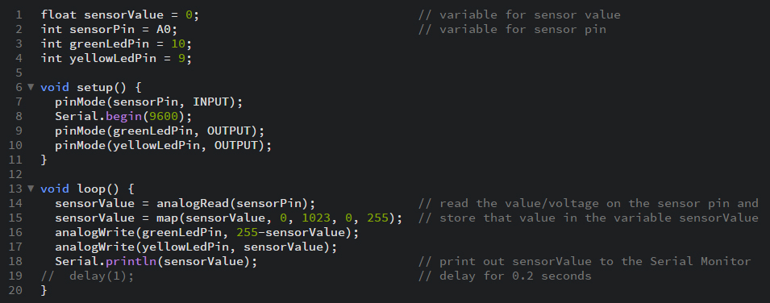

Arduino
Opdracht 3C
In opdracht 3C is het de bedoeling dat we het groene lampje twee keer zo snel laten knipperen dan het gele lampje. De lampjes beginnen beide op LOW. Dat betekend dat de lampjes uit staan. Dit duurt 0.5 seconden. Vervolgens springen beide lampjes op HIGH. Hierdoor gaan de lampjes aan. Dit duurt ook 0.5 seconden. Na deze delay springt het groene lampje uit voor 0.5 seconden terwijl het gele lampje blijft branden. Hierna springt hele groene lampje weer aan voor 0.5 seconden waarna beide lampjes tegelijk uit springen.
{kind=link}
{kind=link}
Opdracht 6C
In opdracht 6C moesten we gebruik maken van de POT-meter. Door aan de pot-meter te draaien moeten de lampjes aan of uit gaan. In dit geval is het de bedoeling dat het ene ledje uit gaat terwijl het andere ledjes aan gaat.
{kind=link}
Opdracht 7
In opdracht 7 maken we gebruik van een lichtsensor. Hoe mee licht de sensor vangt hoe feller het lampje brandt. Door de ‘map’ function zou het flikkeren van het ledje moeten verdwijnen. Dit gebeurde voorheen ook. Het enige probleem is dat je nooit met dezelfde sterkte aan licht om je heen kunt werken. Je zou dit dus continu moeten veranderen.

{kind=link}
Opdracht 9B
In opdracht 9B moesten we zelf bedenken wat we uit wilden laten beelden. Ik heb gekozen voor een triangle die vast zit aan de bovenkant en geleidelijk groter wordt. Dit heb ik gedaan door de 2 bovenste hoeken een vaste waarde te geven en de onderste hoek te laten luisteren naar de POT-meter.
{kind=link}
Opdracht 10F
In opdracht 10F maken we gebruik van 2 buttons. Wanneer 1 button is ingedrukt zou het lampje moeten branden. Maar wanneer er 2 buttons zijn ingedrukt zou er een error moeten ontstaan. Dit doe je door gebruik te maken van een simpele if statement.

{kind=link}
{kind=link}
{kind=link}